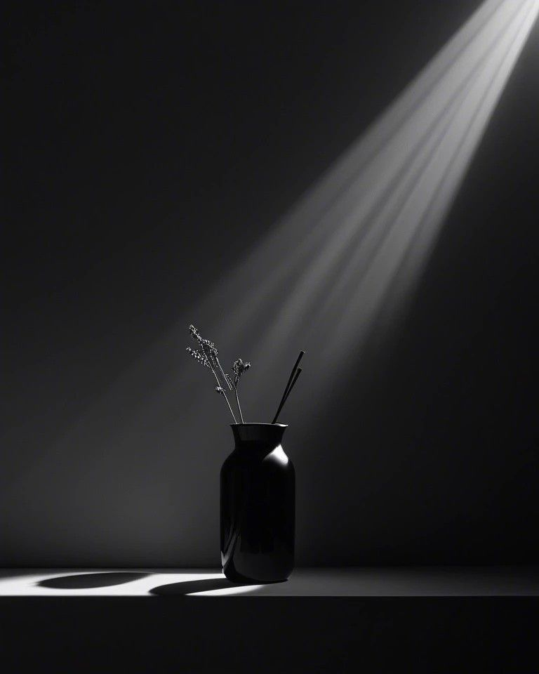
Every beat leaves a halfrest—we photograph whathappens inside it
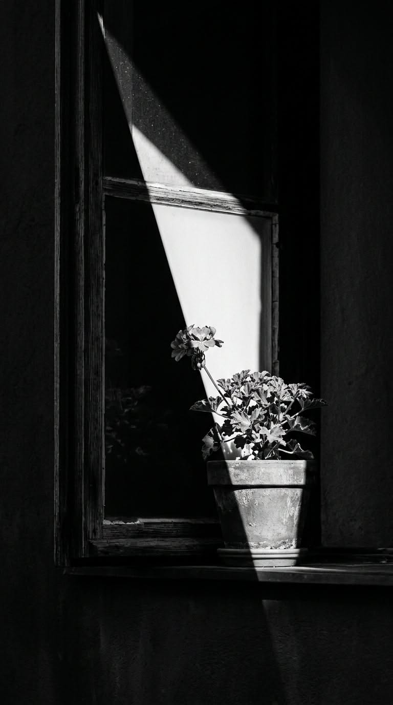
We ask first, wait longer,
and shoot when the pause arrives
( ABOUT )
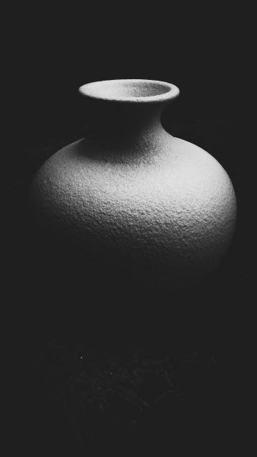
하프레스트는 인물과 공간을 찍는 사진·영상 스튜디오입니다. 촬영 전에 먼저 묻습니다. 어떤 일을 하는지, 이 사진을 어디에 쓰는지, 누구에게 보여 줄지. 답을 들은 뒤에 조명과 거리, 렌즈를 정합니다. 촬영은 성수동 스튜디오와 현장에서 진행하고, 보정과 납품까지 한 팀이 맡습니다.
HALF-REST is a photo and film studio for people and spaces. Before the shoot we ask what you do, where the images will live, and who will see them. Lighting, distance and lens follow from those answers. We shoot in our Seongsu studio or on location, and the same team handles retouching and delivery.
→
포트레이트 촬영은 한 사람을 한 시간 동안 봅니다. 처음 20분은 대화만 합니다. 카메라 앞에서 굳은 어깨가 풀리는 시점을 기다렸다가 셔터를 누릅니다. 개인, 둘, 팀 단위로 촬영하고 결과물은 보정본 10장과 원본 전체입니다.
Portrait sessions run one hour. The first twenty minutes are conversation only. We wait for the shoulders to drop, then start shooting. Solo, duo and team sessions; delivery is ten retouched frames plus the full raw set.
View All Portraits →브랜드·기관·창작자와 함께 캠페인, 공연 기록, 인터뷰, 공간 촬영을 합니다. 기획서를 받으면 먼저 누가 이 이미지를 보게 되는지 정리합니다. 그다음 사진과 영상, 음악의 비율을 정하고 촬영 일정과 인원을 맞춥니다. 프로젝트 한 건의 평균 기간은 3~6주입니다.
We work with brands, institutions and artists on campaigns, performance records, interviews and spaces. Every brief starts with one question: who will look at these images. From there we set the mix of photo, film and sound, then the schedule and crew. Most projects run three to six weeks.
View All Projects →- LOW TIDE
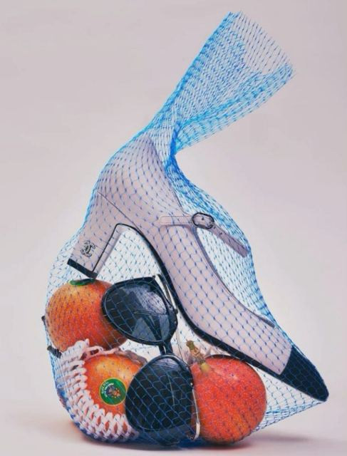
- 빈 방의 온도
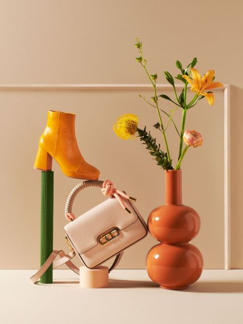
- PAPER MOON 10주년
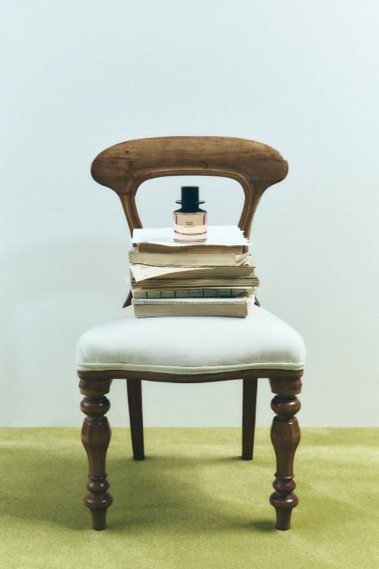
- FIELD NOTE VOL.3
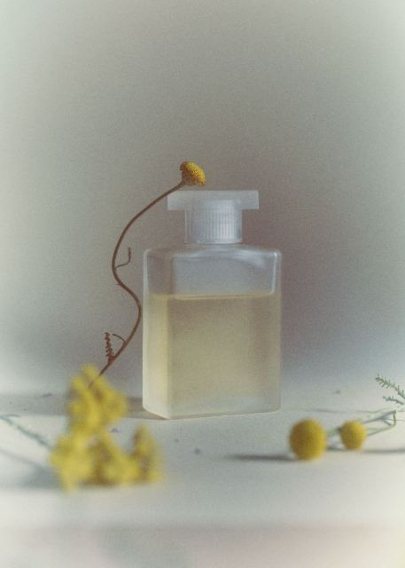
- 겨울 연습곡

- GREY ROOM 오피스
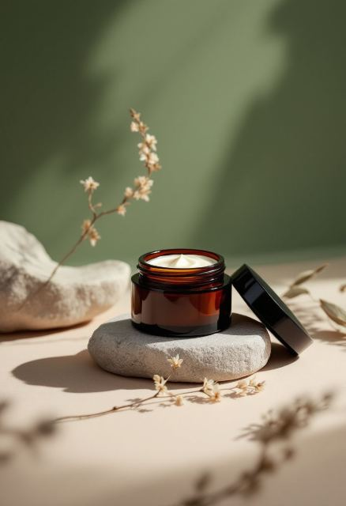
- SILVER LINE 캠페인
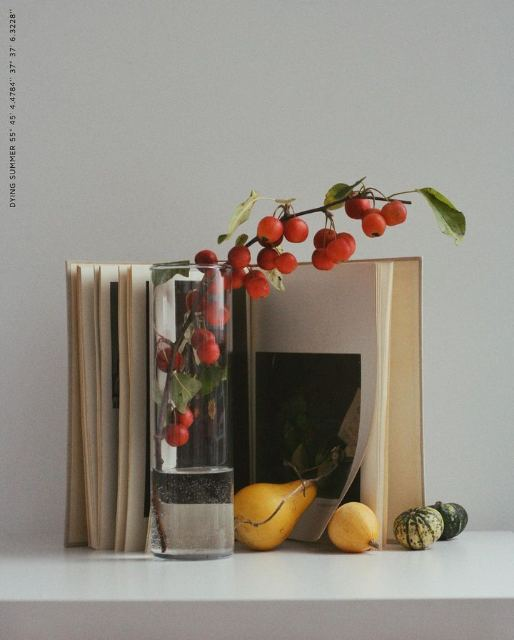
- 마지막 화음
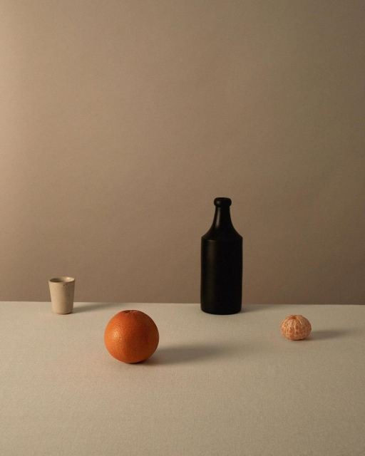
- OPEN HOUR
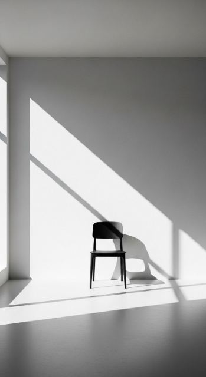
- 종이와 빛

- 느린 도시
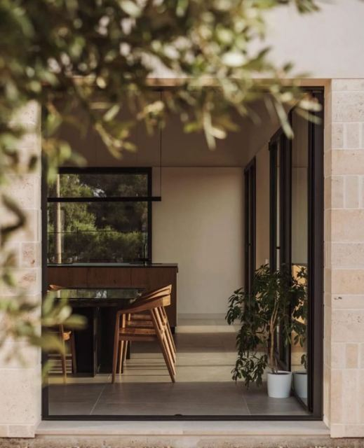
- 쉼표 셋
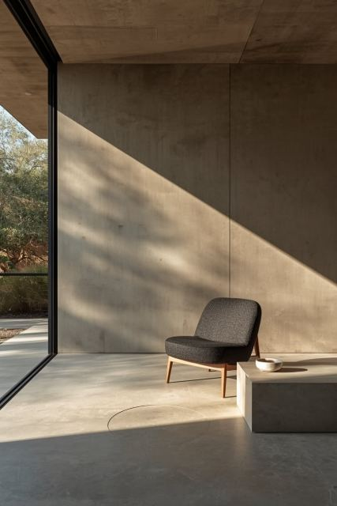
- NIGHT SHIFT
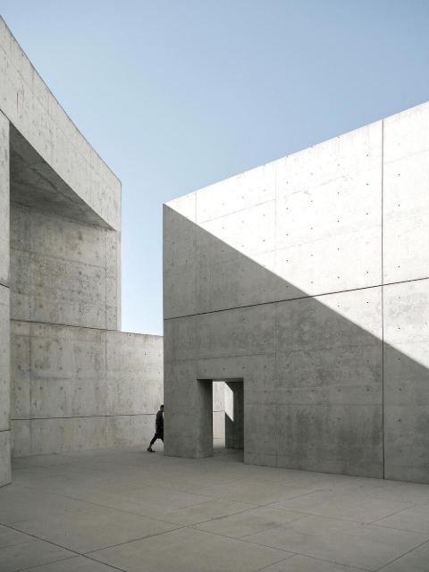
- 손의 기록
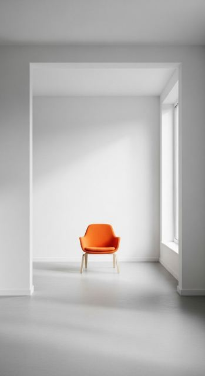
- VISION NOTE 김도하

- VISION NOTE 이수안
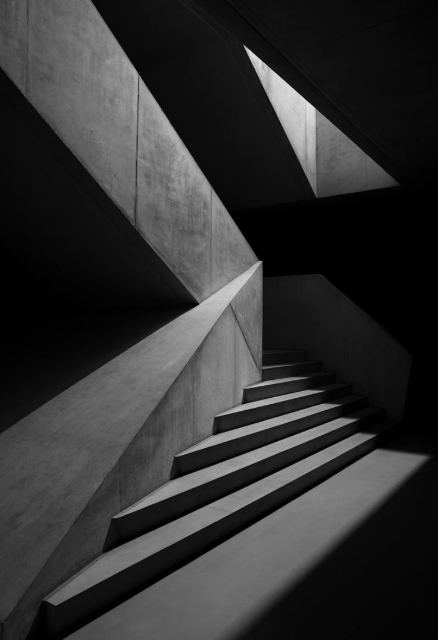
- 봄의 제단
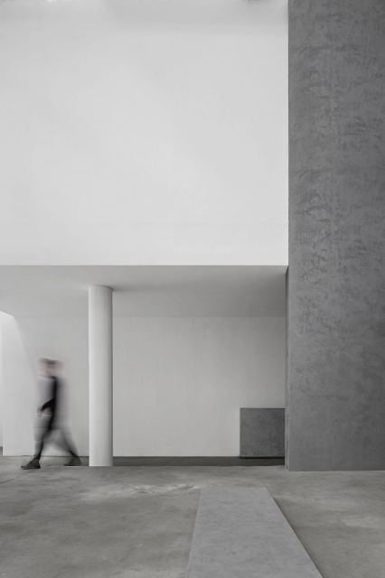
- 새 학기
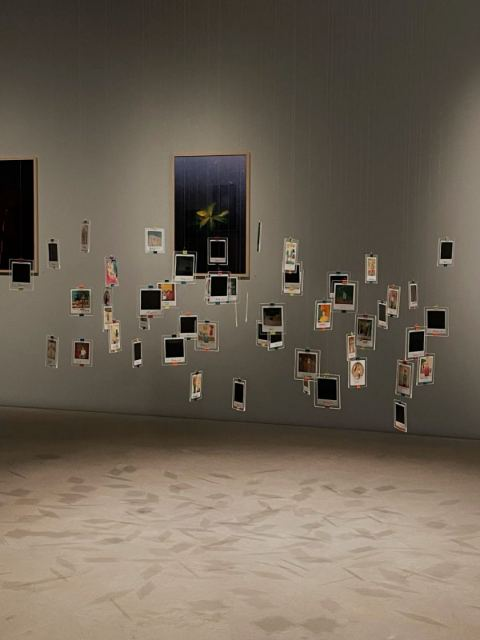
- PRISM LAB 런칭
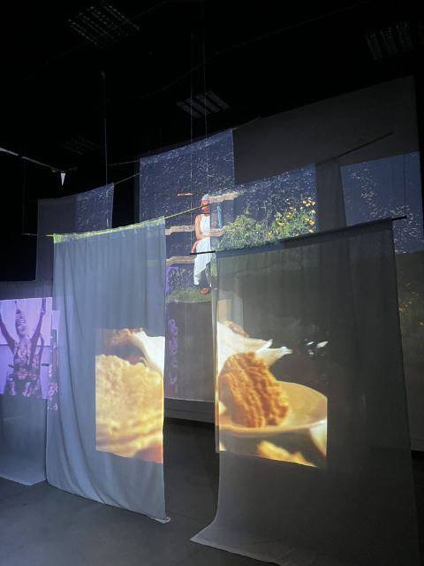
- 조용한 기계

- 한 줄의 집
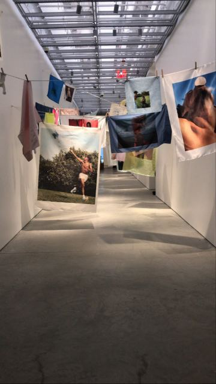
- 사계의 식탁
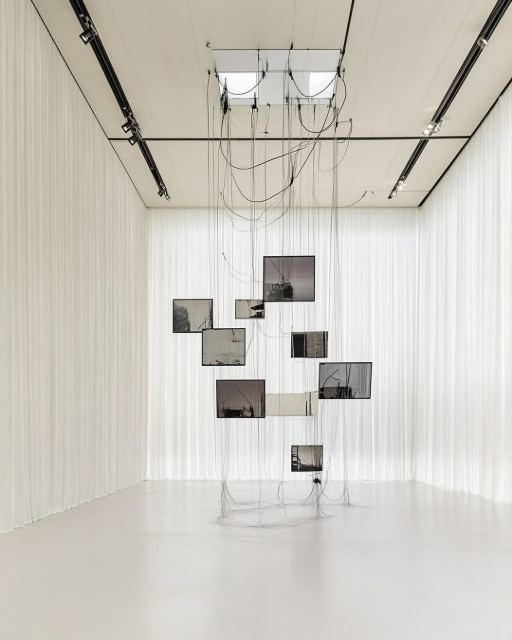
- PARK CONCERT
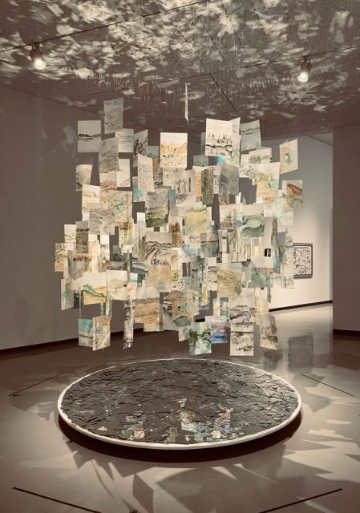
- 밤의 연습실
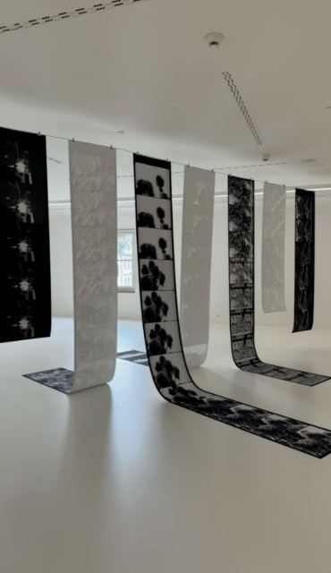
- 세입자의 방

- LOOKBOOK 24FW
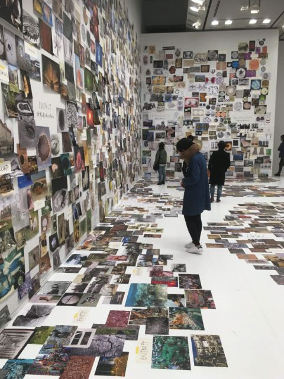
- 아카이브 20
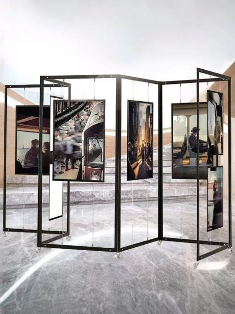
- 나무의 시간
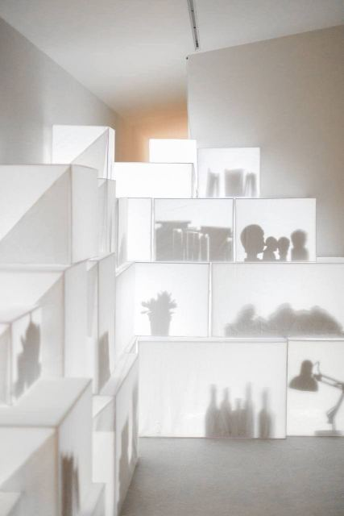
- FOREST JAZZ
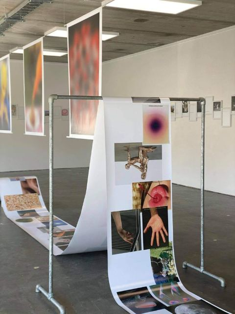
- 물의 무게

스튜디오는 촬영이 없는 저녁에 무대가 됩니다. 객석 40석, 무대 6×4m. 연주와 낭독, 무용, 대담을 열고 공연 전 과정을 사진과 영상으로 남깁니다. 리허설부터 커튼콜까지 같은 팀이 기록합니다. 출연 제안은 연중 받습니다.
On evenings without a shoot, the studio becomes a stage: forty seats and a six-by-four-metre floor. We host concerts, readings, dance and talks, and document each one from rehearsal to curtain call. Proposals are open all year.
View All Stages →